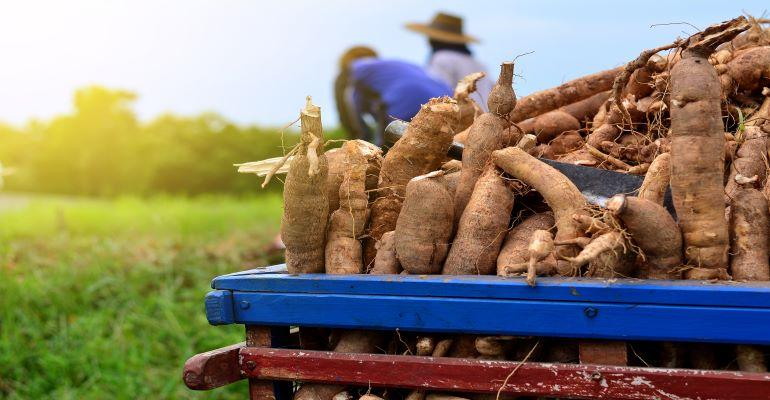

O que é a Mandioca?
A mandioca é uma planta com compostos cianogênicos, sendo consumida na forma de aipim ou macaxeira quando possui baixo teor dessas substâncias. Na indústria, a mandioca “brava” é transformada em farinha e fécula, utilizadas em diversos setores, como alimentos e cosméticos. Variedades biofortificadas são ricas em carotenoides, que ajudam a combater a desnutrição.
Origem e Cultivo

A mandioca, originária da América do Sul, é uma planta perene pertencente à família Euphorbiaceae. Ela é amplamente cultivada em regiões tropicais e subtropicais devido à sua resistência em condições adversas, como pragas e secas. A espécie mais cultivada é a Manihot esculenta, cujas raízes tuberosas são a principal fonte de alimento. O cultivo da mandioca envolve o plantio de brotos, conhecidos como estacas, que podem ser colocados diretamente no solo. A mandioca se adapta bem a diferentes tipos de solo e climas, mas prefere locais com boa drenagem e temperatura amena. O crescimento é rápido, levando de 8 a 24 meses para a colheita, dependendo da variedade e das condições climáticas.
Benefícios Nutricionais

Nutricionalmente, a mandioca é rica em carboidratos, fibras, vitaminas do complexo B, e minerais como cálcio, ferro e fósforo. Ela não contém glúten, tornando-se uma excelente opção para pessoas com doença celíaca e para aqueles que buscam uma dieta sem glúten. A mandioca é uma fonte de energia rápida e pode ser um importante componente em dietas balanceadas. Além disso, a mandioca tem um alto teor de fibras, o que ajuda a regular o trânsito intestinal e pode contribuir para a sensação de saciedade, auxiliando no controle de peso. Os carotenoides encontrados em algumas variedades de mandioca, como as biofortificadas, são importantes para a saúde ocular e podem reduzir o risco de doenças crônicas.